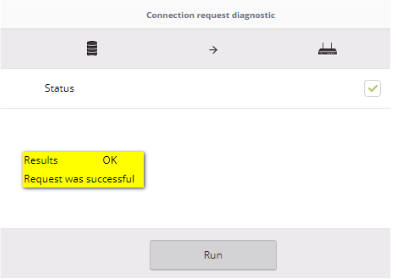

LINEA HFC
¿Falla en señal de Voz y datos?
Validar Nivel Cero
1. Revisar Saldos Pendientes
2. Revisar Suspension en la OP 25.
3. Revisar si tienes ordenes abiertas
4. Verificar si el router que tiene soporta la velocidad
5. Revisa la pagina de Fallas generales
6. Revisa Si tiene quejas abiertas
7. Revisa Si Aplica para FULL CLARO
¿Niveles OK en Axiros?
Identifica el Inconveniente
Antes de iniciar, debes indicarle al cliente que cambie de baterias el telefono, que desconecte y conecte del tomacorriente (Si aplica), adicional que desconecte el cable telefonico e invierta las puntas y vuelva a conectarlos
1. Si Recibe llamadas pero no genera / Genera llamadas pero no recibe:
A. Enviar REBOOT desde Axiros.
B. Realizar pruebas
C. Si Funciona: Soporte Efectivo
2. Linea sin tono
A. Enviar REBOOT desde Axiros.
B. Realizar pruebas
C. Si Funciona: Soporte Efectivo
Si no Funciona en los dos Escenarios: Se Genera Avería - Enviar a Etapa 3, Coloca las pruebas realizads - Tipificar como Reclamos ▶ Avería ▶ Linea HFC ▶ Sin tono ▶ Se genero averia
Acciones
1. Revisar los niveles en axiros
2. Si no estan OK: indicarle al cliente que el cable coaxial este bien apretado, desconecta y conecta de la corriente el router
3. Realiza pruebas con el cliente
4. Si los Niveles estan OK: Seguir checklist Correspondiente al internet
¿Levanto el servicio?
Acciones
1. Confirma en Axiros que no muestre CPE INTERACTION
2. De aparecer CPE INTERACTION: Se Genera Avería - Enviar a CZO, Coloca las pruebas realizads - Tipificar como Reclamos ▶ Avería ▶ Internet HFC ▶ No navega ▶ Se genero averia
Preguntar al Cliente por que medio esta realizando las pruebas
¿Wifi o por Cable?
Acciones
1. Indicarle al cliente que verifique si esta bien conectado el cable tanto en la PC como en el router.
2. Desconectar y conectar el cable de red
3. Deshabilitar y Habilitar la tarjeta de red.
Dio error al Deshabilitar la Tarjeta?:
Realizar ping a google
1. Debes Realizar los siguientes paso:
2. Ver si arroja perdida de paquetes

Perdida de paquetes mayor a 1%?
ACCIONES:
1. Se debe generar Visita tecnica
2. Tipificar como Reclamos ▶ Avería ▶ Internet HFC ▶ No navega ▶ Se genero averia
3. Actualizar niveles en axiros y pegar niveles actualizados en memo de queja
4. Colocar en el memo el estado del puerto en axiros
ETAPA DE LA QUEJA:
1. Niveles Errones en axiros: Enviar queja a etapa CZO
2. Niveles correctos en axiros: Enviar queja a etapa CGE
Cambiar Nombre de Red y Contraseña:
1. Debes realizar cambio de contraseña y nombre de red en UMP.
2. Debes Validar la titularidad (Ingresa pagina restricciones).
3. Guardas los cambios y refrescas.
Cliente se conecta y Navega?:
Acciones
1. Indicarle al cliente que verifique si esta conectado el cable tanto en la PC como en el router.
2. Desconectar y conectar el cable de red
3. Deshabilitar y Habilitar la tarjeta de red.
Dio error al Deshabilitar la Tarjeta?:
Realizar ping a google
1. Debes Realizar los siguientes paso:
2. Ver si arroja perdida de paquetes
